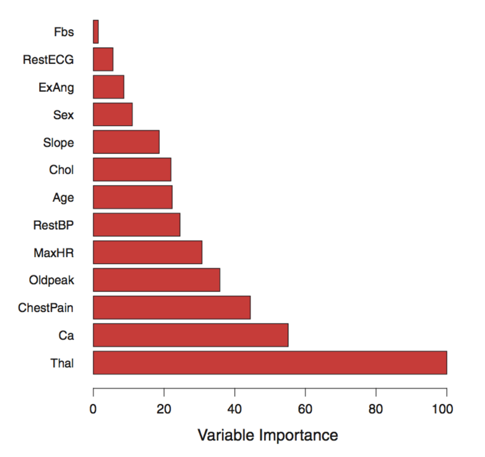
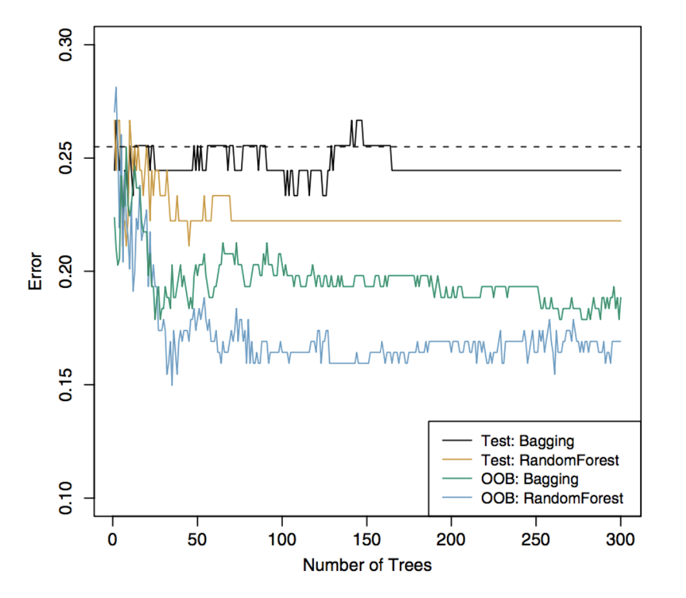
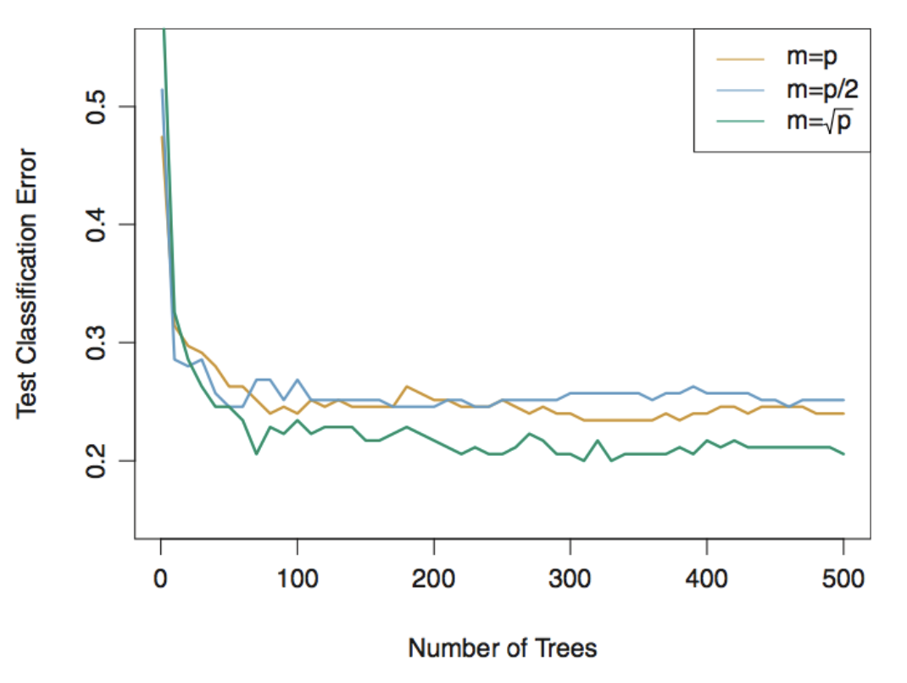
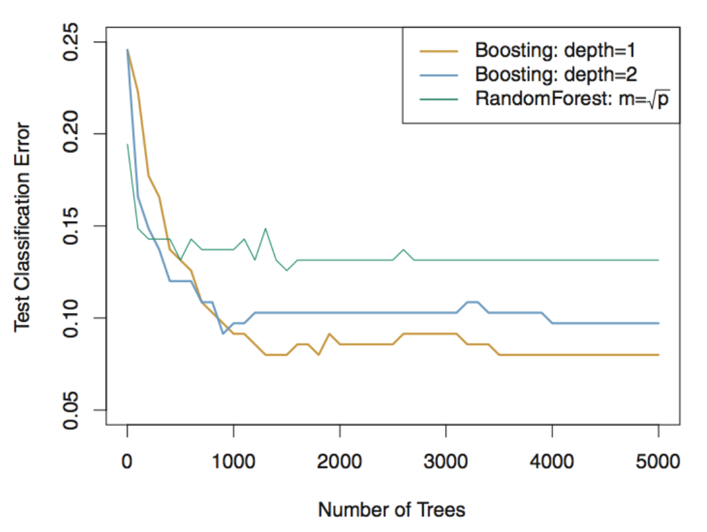

Week 9
By the end of this lecture, you should be able to:
Explain how bagging uses bootstrap sampling and averaging to reduce the variance of decision trees.
Describe how out-of-bag (OOB) error is used to estimate prediction error.
Explain how to measure variable importance
Describe how random forests extend bagging
Explain how boosting builds trees sequentially and identify its main tuning parameters.
Compare bagging, random forests, and boosting in terms of how trees are constructed and predictions are combined.
Bootstrap aggregation, or bagging, is a general-purpose procedure for reducing the variance of a statistical learning method.
Two heads are better than one!
We introduce it here because it is particularly useful and frequently used in the context of decision trees.
Given a set of \(N\) independent estimates \(\hat\beta^{(1)},\ldots,\hat\beta^{(N)}\) of \(\beta\), suppose
\[ \left|\mathbb{E}\left[\hat\beta^{(i)}\right]-\beta\right|\leq b, \qquad \operatorname{Var}(\hat\beta^{(i)})=\sigma^2, \qquad \forall i=1,\ldots,N. \]
Then the averaged estimate
\[ \bar\beta:=\frac{1}{N}\sum_{i=1}^N\hat\beta^{(i)} \]
satisfying
\[ \left|\mathbb{E}[\bar\beta]-\beta\right|\leq b, \qquad \operatorname{Var}(\bar\beta)=\frac{\sigma^2}{N}. \]
In other words, averaging a set of independent random variables reduces the variance, meanwhile does not incur extra bias.
To apply bagging to regression trees, if we had \(B\) independent training sets, then we simply construct \(B\) regression trees using each of the training set, and average the resulting predictions in the end.
Since we only have one training set, we bootstrap the same amount of data \(B\) times from the training set with replacement
We train a decision tree by using the \(b\)th bootstrap data and get the prediction \(\hat f^{*b}(x)\) at a point \(x\). Bagging averages all the predictions
\[ \hat f_{\mathrm{bag}}(x)=\frac{1}{B}\sum_{b=1}^B\hat f^{*b}(x). \]
The fitted decision trees on bootstrap data sets are grown deep, and need not be pruned. Hence each individual tree has high variance, but low bias. Averaging these trees reduces the variance.
Bagging can be also applied to classification trees. For a given test observation, we can record the class predicted by each of the \(B\) trees, and take a majority vote.
There is a simple way to estimate the test error of a bagged model, without the need to perform cross-validation or the validation set approach.
For each bootstrap data set,
For each observation \(i\), we can pool its predictions across all \(B\) bootstrap data sets where \(i\) belongs to the OOB observations.
We compute the MSE / misclassification error between predictions and the true responses over all observations.
Bagging typically reduces variance (i.e. improve accuracy) over prediction using a single decision tree.
However, it can be difficult to interpret the resulting model.
One can obtain an overall summary of the importance of each predictor using the RSS (for bagging regression trees) or the Gini index (for bagging classification trees).
In the case of bagging regression trees, we can record the total amount that the RSS is decreased due to splits over a given predictor, averaged over all \(B\) trees.
In bagging classification trees, we replace RSS by the Gini index.
A large value of decreased RSS (or Gini index) indicates an important predictor.
A graphical representation of variable importance is easy to draw.

Variable importance is computed using the mean decrease in Gini index, and expressed relative to the maximum.
Variance is reduced
How much is variance reduced?
Bagging is affected by the correlation among decision trees!
Random forests provide an improvement over bagged trees by decorrelating the trees. This increases the variance reduction when we average the trees.
As in bagging, we build a number of decision trees on bootstrap training samples.
But for building these decision trees, each time a split in a tree is considered, a random selection of \(m < p\) predictors is chosen as split candidates from the full set of \(p\) predictors.
A fresh selection of \(m\) predictors is taken at each split, and a common choice of \(m\) is \(m \approx \sqrt{p}\).
Random forest with \(m=p\) is just bagging!
Suppose that there is one very strong predictor in the data set, along with a number of other moderately strong predictors.
Among all single decision trees, most of them will use this strong predictor in the top split. All of the single trees will look quite similar and could have high correlation.
Random forests reduce the correlation by randomly selecting a subset of the predictors in each split of building each single tree. Indeed, on average many splits will not even consider the strong predictor.

The test error (black and orange) is shown as a function of \(B\). Random forests were applied with \(m=\sqrt p\). The dashed line indicates the test error resulting from a single classification tree. The green and blue traces show the OOB error, which is considerably lower by chance.
We applied random forests to a high-dimensional biological data set consisting of expression measurements of 4,718 genes measured on tissue samples from 349 patients.
There are around 20,000 genes in humans, and individual genes have different levels of activity, or expression, in particular cells, tissues, and biological conditions.
Each of the patient samples has a qualitative label with 15 different levels: either normal or one of 14 different types of cancer.
We use random forests to predict cancer type based on the 500 genes that have the largest variance in the training set.
We randomly divided the observations into a training and a test set, and applied random forests to the training set for three different values of the number of splitting variables \(m\).

The test errors are displayed as functions of the number of trees (\(B\)). Random forests (\(m<p\)) lead to a slight improvement over bagging (\(m=p\)). A single classification tree has an error rate of 45.7%.
Like bagging, boosting is a general approach that can be applied to many statistical learning methods for regression and classification. We focus on the context of decision trees.
Bagging (and random forest) involves creating multiple copies of the original training data set using bootstrap, fitting a separate decision tree to each copy, and then combining all of the trees in order to create a single predictive model.
Boosting works both similarly and also differently
Set \(\hat f(x)=0\) and \(r_i=y_i\) for all \(i\) in the training set.
For \(b=1,2,\ldots,B\), repeat:
Fit a tree \(\hat f^b\) with \(d\) splits (\(d+1\) terminal nodes) to the training data \((X,r)\).
Update \(\hat f\) by adding in a shrunken version of the new tree:
\[\hat f(x)\leftarrow\hat f(x)+\lambda\hat f^b(x).\]
\[r_i\leftarrow r_i-\lambda\hat f^b(x_i).\]
Output the boosted model,
\[\hat f(x)=\sum_{b=1}^B\lambda\hat f^b(x).\]

For both boosting trees, \(\lambda=0.01\). Depth-1 trees slightly outperform depth-2 trees and random forests. But these differences are within their standard errors, making none of the difference significant.
Decision trees are simple and interpretable models for regression and classification.
However their prediction accuracy is often not competitive with other regression / classification methods.
Bagging, random forests and boosting can improve prediction accuracy of trees. They work by growing many trees on the training data and then combining the predictions of the resulting trees.
The latter two methods, random forests and boosting, are among the state-of-the-art methods for supervised learning. However their results can be difficult to interpret.
Announcements: Midterm on Wednesday in EX 200 during class time (11:10am - 12:50pm).
Next Week: Support Vector Machines